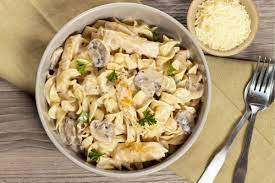

Chicken and Mushroom Pasta

The best pasta dish you will ever taste
Use your stovetop to prepare this quick and tasty meal with chicken, spinach, mushrooms, and pasta for a weeknight, or for guests! Use one pot for the pasta and one pot for the chicken, veggies and sauce, then combine in a pretty pasta bowl or on a platter.
Ingredients
- 1 pound farfalle (bow-tie) pasta
- 3 tablespoons extra virgin olive oil
- 2 pounds chicken tenders, patted dry
- salt and ground black pepper to taste
- 24 ounces fresh mushrooms, sliced
- 1 medium onion, halved and thinly sliced
- 3 tablespoons fresh minced garlic
- 3 cups chicken broth
- 4 teaspoons Dijon mustard
- ¼ cup heavy cream
- 2 cups roughly chopped fresh spinach
- 2 tablespoons coarsely grated Parmesan cheese, or to taste
- 1 teaspoon chopped flat-leaf (Italian) parsley, or to taste (Optional)
Steps
- Bring a large pot of lightly salted water to a boil. Cook bow-tie pasta at a boil, stirring occasionally, until tender yet firm to the bite, about 12 minutes. Drain and transfer to a serving bowl or a deep platter.
- Meanwhile, heat olive oil in a large skillet over medium-high heat for 1 to 2 minutes. Season tenders with salt and pepper; place in hot oil and cook until lightly brown on one side, 3 to 4 minutes. Turn and cook on other side until light brown, an additional 3 to 4 minutes. Transfer chicken to a plate.
- Add mushrooms and onion to the hot skillet; cook and stir until onion is lightly browned, 4 to 5 minutes. Stir in garlic and cook for 1 minute. Stir in chicken broth and mustard. Season with salt and pepper; cook for 5 minutes. Return chicken tenders to skillet and submerge them in broth mixture. Cook until chicken is no longer pink in the center and juices run clear, about 5 minutes. An instant-read thermometer inserted into the center should read at least 165 degrees F (74 degrees C). Remove chicken and place on top of cooked pasta.
- Continue to cook sauce until slightly thickened, about 3 minutes. Turn off heat and stir in cream. Add spinach and stir until wilted, about 1 minute. Pour sauce over chicken and pasta. Sprinkle with Parmesan cheese and garnish with parsley.
- Enjoy!